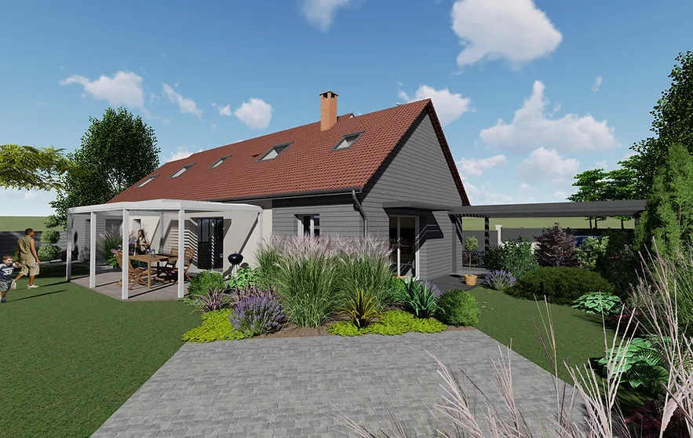

Nos projets.
D’autres façons d’habiter.
Construction, rénovation, agrandissement : parcourez les vues de conception de nos projets.
Choisissez un type de projet, puis ouvrez les images pour les découvrir de plus près.
Explorer les projetsLe portfolio D-SIGN

Agrandissement à Vers-sur-Selle (80)
Vues de conception

Rénovation à Boves (80)
Vues de conception
Agrandissement à Vers-sur-Selle (80)
Vues de conception
Construction à Vers-sur-Selle (80)
Vues de conception
Construction à Boves (80)
Vues de conception
Construction à Grattepanche (80)
Vues de conception
Rénovation à Berck (62)
Vues de conception
Rénovation à Grattepanche (80)
Vues de conception
Agrandissement à Vers-sur-Selle (80)
Vues de conception
Et si nous imaginions le vôtre ?
Le lieu, vos idées, vos priorités.
Parlons de ce que vous souhaitez créer.